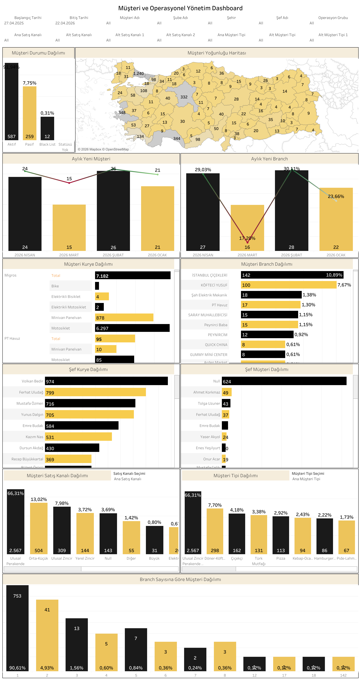

Canlı Rapora Erişin
Güncel müşteri ve operasyonel yönetim verilerini Tableau üzerinde görüntüleyin.
Dashboard Hakkında
Ne Gösterir?
Bu dashboard, Paket Taxi'nin tüm müşteri portföyünü aktif/pasif/blacklist durumu ve coğrafi dağılım bazında analiz eder. Aylık yeni müşteri ve şube trendleri, müşteri-kurye dağılımı ve satış kanalı kırılımları tek ekranda sunulur.
- Müşteri Durumu Dağılımı: Aktif, Pasif, Black List ve Statüsü Yok kategorileri ile müşteri sayıları
- Müşteri Yoğunluğu Haritası: Türkiye genelinde şehir bazlı müşteri yoğunluğu
- Aylık Yeni Müşteri ve Branch Trendi: Son 4 aylık yeni müşteri ve şube kazanım grafiği
- Müşteri Kurye Dağılımı: Operasyon ve araç tipi bazında kurye sayıları
- Müşteri Branch Dağılımı: Müşteri bazında şube sayısı ve yüzde dağılımı
- Şef Kurye ve Şef Müşteri Dağılımı: Şef bazlı kurye ve müşteri atama detayları
- Müşteri Satış Kanalı ve Tipi Dağılımı: Ana satış kanalı ve müşteri tipi bazında segmentasyon
- Filtreler: Başlangıç/bitiş tarihi, müşteri adı, şube adı, şehir, şef adı, operasyon grubu, satış kanalı ve müşteri tipi
Dashboard Önizleme

Paket Taxi Müşteri ve Operasyonel Yönetim Dashboard — Tableau